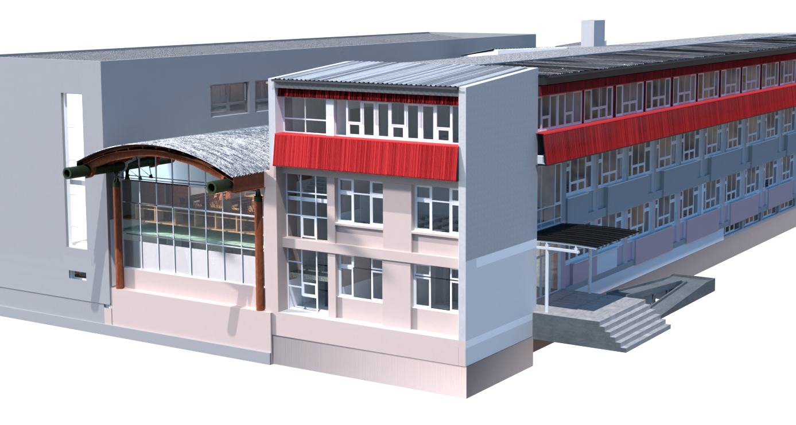
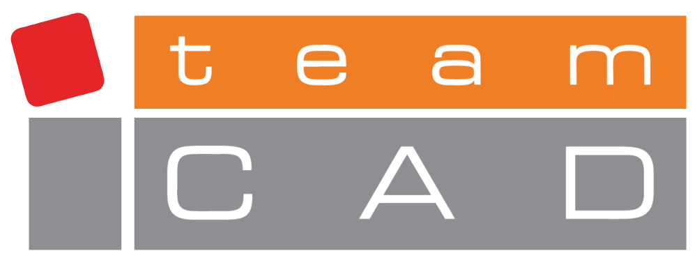
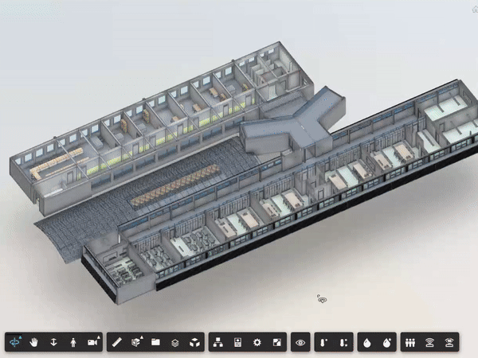
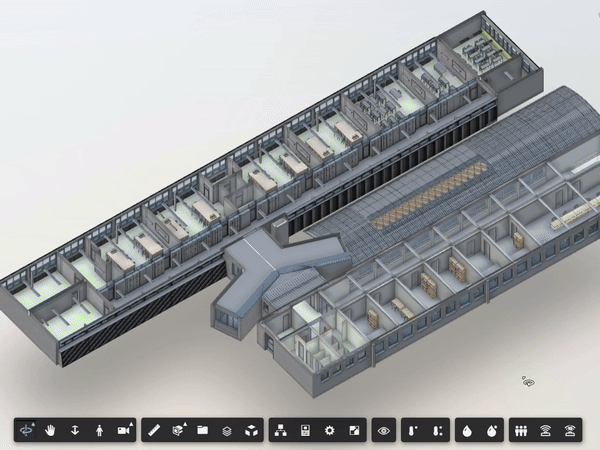

Projekat škole PavleS predstavlja revolucionarnu inicijativu koja spaja
tehnologiju
i obrazovanje, stvarajući inteligentne zgrade koje optimizuju resurse i pružaju korisne
informacije.
Ova inovativna saradnja između TeamCAD-a i Tehničke škole Pavle Savić postavlja nove standarde u
efikasnosti, udobnosti i održivosti u obrazovanju i poslovnom svetu.


Održavanje prostorije
Saznajte koje su prostorije najčešće korišćene
Modul namenjen analizi upotrebe prostorija, u cilju optimizacije resursa
potrebnih za njihovo čišćenje. Oslanja se na informacije iz 3D BIM modela i senzora
prisutnosti. Na osnovu dobijenih podataka moguće je videti koje prostorije su korišćene
i koliko, njihove površine kao i ukupna površina korišćenih prostorija.
Na ovaj način se može planirati spremanje samo prostorija koje su bile u
upotrebi.

Temperatura i vlažnost vazduha
Saznajte u kojim je prostorijama boravak najprijatniji
Moduli namenjeni obradi informacija dobijenih od senzora koji mere
temperaturu i vlažnost vazduha u prostoriji. Ovo omogućava precizno upravljanje klimatizacijom i
održavanje optimalnih uslova za udobnost i efikasnost.
Pored toga, senzori mogu detektovati
ekstremne promene temperature i vlažnosti, što može ukazivati na potencijalne probleme u sistemu
grejanja ili hlađenja, kao i na nezdrave uslove za boravak ljudi.

Zauzetost prostorija
Efikasno upravljajte prostorijama uz pomoć senzora prisutnosti
Modul senzora za zauzetost prostorija omogućava efikasnu optimizaciju procesa
čišćenja prostorija. Pruža realne vremenske informacije o zauzetosti prostorija, omogućavajući
prilagođavanje rasporeda čišćenja prema stvarnoj upotrebi prostora. Tako se izbegava nepotrebno
čišćenje prostorija koje nisu u upotrebi, što rezultira uštedom vremena, resursa i smanjenjem
troškova održavanja.
Dodatno, informacije o zauzetosti u poslednjih 10 minuta omogućavaju
dinamičko planiranje čišćenja, što doprinosi efikasnosti i optimalnom korišćenju resursa za
održavanje higijene prostora.
Malo više o nama
O školi
Tehnička škola "Pavle Savić" u Novom Sadu osnovana je 25. jula 1961. godine kao
Hemijsko-tehnološka škola. Sa samo dva odeljenja i 60 učenika, počela je sa radom u zgradi
Združene mlinarske industrije. Danas škola obrazuje učenike u tri oblasti: hemija, nemetali i
grafičarstvo; lične usluge; poljoprivreda, proizvodnja i prerada hrane, sa 17 obrazovnih profila
i 1199 učenika.
Link ka sajtu škole
O TeamCAD firmi
TeamCAD se bavi prodajom, implementacijom, konsaltingom i razvojem softvera. Sa
19 godina iskustva i 3500 aktivnih klijenata je vodeći Autodesk partner na teritoriji zapadnog
Balkana sa mnogobrojim Autodesk statusima. TeamCAD poseduje više Autodesk specijalizacija i
organizuje obuke za CAD kurseve i radionice po Autodeskovim standardima.
Link ka sajtu firme
O Pavlu Saviću
Pavle Savić (Solun, 10. januar 1909. - Beograd, 30. maj 1994.) bio je srpski
fizičar i hemičar, poznat po saradnji sa Irinom Žolio Kiri u Parizu, gde su otkrili izotope
poznatih elemenata bombardovanjem atoma urana sporim neutronima. Bio je i direktor izgradnje
Nuklearnog instituta u Vinči, a zatim i osnivač Instituta "Vinča" i njegov direktor.
Link ka wiki stranici